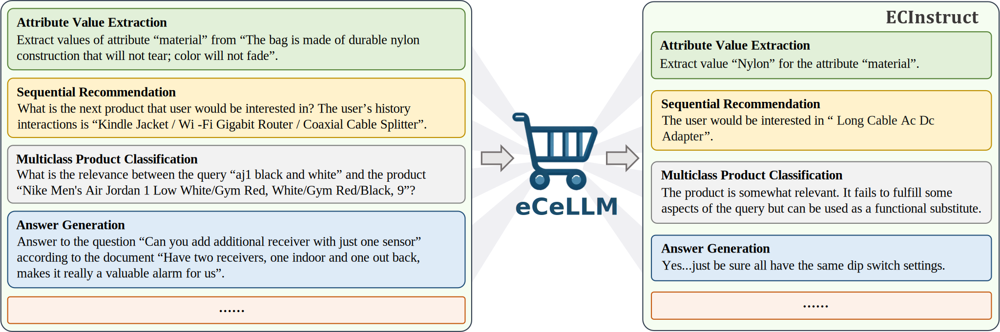

Abstract
With tremendous efforts on developing effective e-commerce models, conventional e-commerce models show limited success in generalist e-commerce modeling, and suffer from unsatisfactory performance on new users and new products — a typical out-of-domain generalization challenge. Meanwhile, large language models (LLMs) demonstrate outstanding performance in generalist modeling and out-of-domain generalizability in many fields. Toward fully unleashing their power for e-commerce, in this paper, we construct ECInstruct, the first open-sourced, large-scale, and high-quality benchmark instruction dataset for e-commerce. Leveraging ECInstruct, we develop eCeLLM, a series of e-commerce LLMs, by instruction-tuning general-purpose LLMs. Our comprehensive experiments and evaluation demonstrate that eCeLLM models substantially outperform baseline models, including the most advanced GPT-4, and the state-of-the-art task-specific models in in-domain evaluation. Moreover, eCeLLM exhibits excellent generalizability to out-of-domain settings, including unseen products and unseen instructions, highlighting its superiority as a generalist e-commerce model. Both the ECInstruct dataset and the eCeLLM models show great potential in empowering versatile and effective LLMs for e-commerce.
Overall scheme of eCeLLM instruction-tuned with ECInstruct
ECInstruct Dataset
ECInstruct covers 116,528 samples from 10 real and widely performed e-commerce tasks of 4 categories. Each data sample comprises an instruction, an input, and an output. Some samples also incorporate a list of options. All the 10 tasks have in-domain (IND) test samples, and 6 tasks also have out-of-domain (OOD) test samples which consist of products unseen in the training samples of the respective tasks. ECInstruct undergoes rigorous and thorough scrutiny and is carefully crafted to enable a wide spectrum of empirical testing and exploration, including IND evaluation, OOD evaluation, and task-specific studies. Particularly, ECInstruct includes 3 tasks for product understanding: (1) attribute value extraction (AVE), (2) product matching (PM) and (3) product relation prediction (PRP). For user understanding, ECInstruct includes (4) sentiment analysis (SA) and (5) sequential recommendation (SR). ECInstruct also covers 3 query product matching tasks: (6) multi-class product classification (MPC), (7) product substitute identification (PSI), and (8) query-product ranking (QPR). For product question answering, ECInstruct contains the tasks of (9) answerability prediction (AP) and (10) answer generation (AG).
Table above summarizes the tasks in ECInstruct and their data sources. More details are available in Appendix A of our paepr.
Overall Performance
- IND
- OOD
In the tables, "F1*", "Macro F1", "F1", "HR@1", "Accuracy", "NDCG" and "FBERT" are the primary evaluation metrics in respective tasks (Appendix A). For each task, the best baseline performance is underlined, and the overall best performance is in bold. The row "improvement" presents the percentage improvement of the best-performing eCeLLM model over the best-performing baseline model (underlined) in each task. We also include the average ('avg') improvement across all the tasks in the table. Overall, our experimental results demonstrate the following findings: eCeLLM models substantially outperform baseline models, including the most advanced GPT-4 Turbo and the state-of-the-art (SoTA) task-specific models, on almost all the 10 tasks in IND evaluation. On average, eCeLLM models show a substantial improvement of 10.7% over the best baseline models. Moreover, eCeLLM exhibits excellent generalizability to OOD settings, highlighting its superiority as a generalist e-commerce model. Particularly, eCeLLM models establish an improvement of 9.3% over the best baselines on the OOD (new) products. These results indicate the great potential of both the ECInstruct dataset and the eCeLLM models in empowering versatile and effective LLMs for e-commerce, and validate the potential of LLMs in doing e-commerce tasks.
Complete Results on Each Task
- AVE
- PRP
- PM
- SA
- MPC
- PSI
- AP
- AG
- SR and QPR
Overall, these tables show that eCeLLM models fine-tuned on ECInstruct outperform the general-purpose LLMs and SoTA task-specific models in the IND test. Meanwhile, the eCeLLM exhibits good generalizability to the OOD data. Because of the high-quality ECInstruct, eCeLLM achieves remarkable performance with different base models. Note that #failed in tables represents the number of failure cases that we cannot extract meaningful results from the model output.
Cite Our Work
Please cite our paper if you use our code, data, or models: